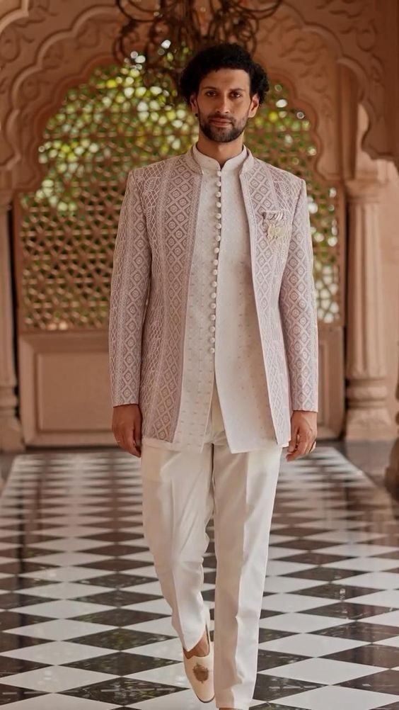

Our Commitment
Transparency & Earth-First Practices

Redefining Luxury
True luxury respects its origin. Our goal is to achieve full circularity by 2030, meaning every garment we produce is created solely with materials that can be cleanly regenerated or returned to the earth.
98% Organic Materials
GOTS certified organic cotton, ethical wool, and recycled cashmere.
Carbon Neutral Shipping
Every order shipped offsets 100% of its carbon emissions through Gold Standard projects.
Zero-Waste Packaging
Our mailers and boxes are completely biodegradable and use soy-based inks.